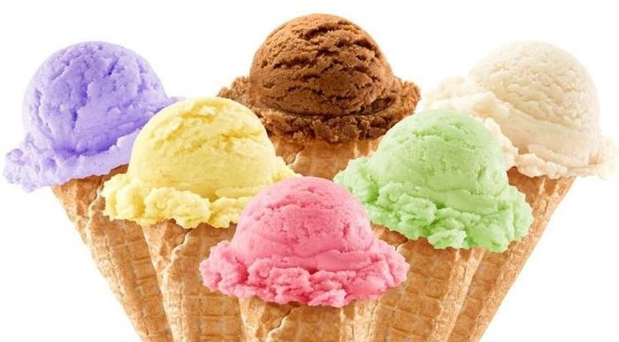
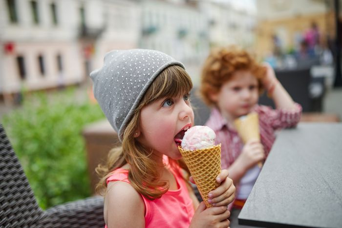

Sejarah Es Krim

Foto: toriavey.com
Sejak 64 Masehi
Sejarah kemunculan es krim dipercaya berawal dari zaman kepemimpinan Kaisar Nero dari Romawi di tahun 64 Masehi.
Ini terbukti dari catatan sejarah yang menceritakan mengenai salah satu hidangan pesta.
Hidangan tersebut adalah es salju halus yang diambil dari penggunungan dan dihidangkan bersama buah-buahan serta madu.
Adonan es krim pertama
Tetapi yang paling awal mengenalkan bentuk es krim seperti sekarang adalah
Kaisar Tang dari Dinasti Shang, China, pada tahun 700 Masehi.
Ketika disajikan es yang diambil dari salju, Kaisar meminta agar es tersebut
dicampur dengan susu sapi, tepung, dan sedikit kapur barus.
Adonan ini diaduk hingga membentuk krim. Maka, jadilah adonan es krim seperti yang kita kenal sekarang.
Hanya untuk bangsawan
Namun banyak yang mengatakan bahwa adonan es krim pertama kali dikenalkan oleh Marcopolo pada abad ke 16.
Ia pulang dari berlayar dan membawa resep es krim. Awalnya es krim terbuat dari es salju
yang dicampur lemak susu, buah-buahan, dan diberi berbagai macam adonan sehingga lembut dan nikmat.
Saat itu, es krim adalah hidangan istimewa yang hanya dapat dinikmati kaum bangsawan.
Es krim di Indonesia
Di Indonesia, es krim dibawa oleh bangsa Belanda.
Ice Cream Saloon adalah es krim pertama yang hanya bisa dinikmati di kota besar
seperti Jakarta, Bogor, Bandung, Malang, dan Surabaya.
Saat itu es krim merupakan makanan mewah dan mahal,
sehingga kebanyakan hanya orang Belanda saja yang menikmatinya.
Sumber: https://bobo.grid.id/read/08674800/sejarah-es-krim
Manfaat Makan Es Krim di Pagi Hari

Seiring dengan tren makanan yang silih berganti, terdapat satu jenis dessert yang tidak lekang oleh waktu, yaitu es krim.
Dengan berbagai pilihan rasa dan kepopulerannya, es krim menjadi salah satu dessert favorit masyarakat untuk segala kalangan dan usia.
Meski demikian, es krim kerap kali dicap sebagai dessert yang harus dihindari karena sifatnya yang dingin dan rasanya yang manis.
Padahal, es krim sendiri memiliki khasiat yang jarang diketahui.
Selain mengandung vitamin dan mineral, mengonsumsi es krim di pagi hari bahkan dapat mendatangkan manfaat positif bagi kesehatan.
Berikut manfaatnya:
1. Membangkitkan mood seharian
Ketika makan es krim, tubuh akan menghasilkan hormon serotonin yang dapat membuat kamu lebih bahagia.
Untuk itu, makan es krim di pagi hari bisa memperoleh perasaan bahagia dan mood yang bagus.
Efeknya, sisa harimu akan terasa lebih menyenangkan dan bersemangat.
2. Asupan nutrisi bagi tubuh
Faktanya, es krim mengandung vitamin A, D, K, B12, kalsium, dan fosfor yang memiliki efek baik bagi kesehatan tubuh.
Jadi, kamu bisa melengkapi menu sarapan manismu dengan es krim kesukaan yang kaya akan nutrisi dan vitamin untuk mendukung produktivitas seharian.
3. Sebagai pereda gejala flu
Tekstur lembut dari es krim akan membantu meringankan sakit pada tenggorokan, mengurangi dehidrasi,
dan menambah asupan kalori yang hilang akibat tidak nafsu makan.
4. Sumber energi tambahan
Tidak hanya gula, es krim yang mengandung lemak dan protein ini bisa menjadi salah satu asupan bagi tubuh untuk menjalani aktivitas sehari-hari.
5. Menjaga kekuatan tulang dan gigi
Sejak kecil, kamu pasti diajarkan untuk rajin minum susu demi menjaga kesehatan gigi dan tulang.
Susu sangat identik dengan kandungan kalsium yang tidak dapat diproduksi oleh tubuh secara alami.
Oleh karena itu, kamu perlu mencari asupan kalsium dari berbagai bahan makanan atau suplemen supaya kondisi tulang tetap kuat.
Dengan bahan dasar susu yang kaya akan kalsium, es krim dapat menjadi salah satu cara untuk memperkuat tulang dan gigi.
Sumber: https://www.cnnindonesia.com/gaya-hidup/20211207112220-262-730860/5-manfaat-makan-es-krim-di-pagi-hari